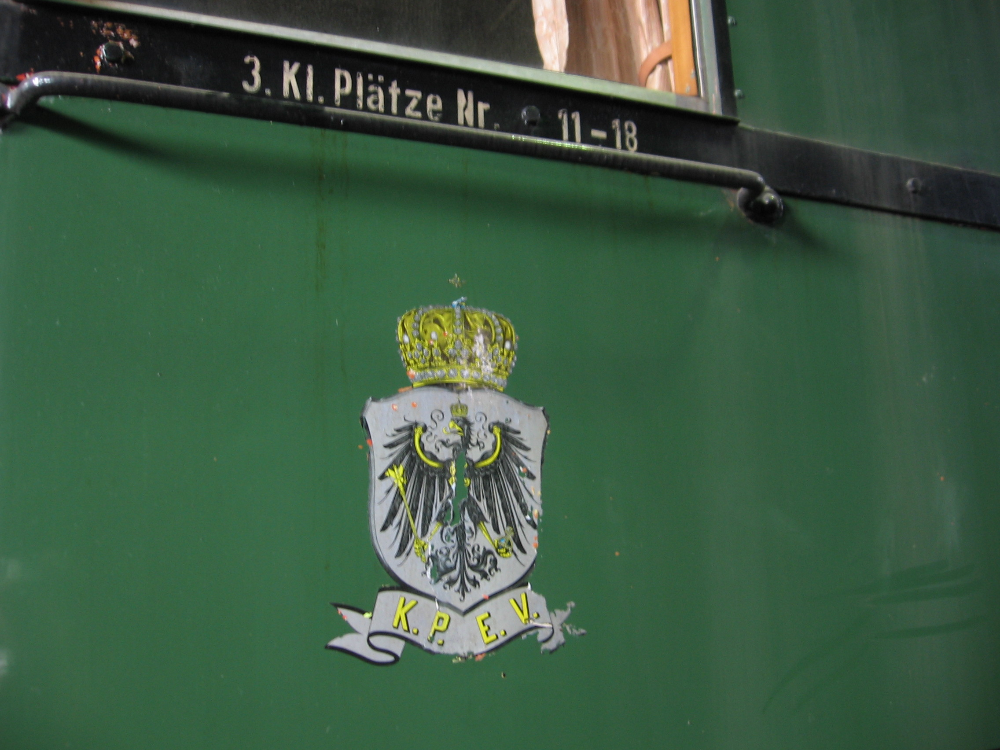
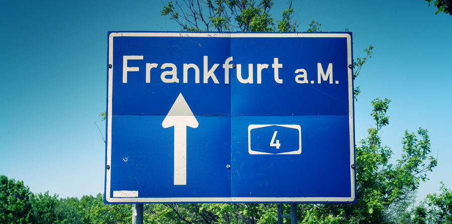
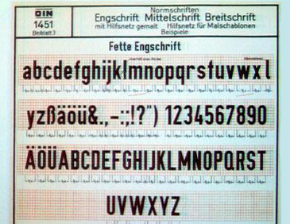

DIN is one of my favorite typefaces to design with, because it strong personality and versatility. The page will show some more about this typeface.
DIN's origin is written in its name - Deutsches Institut für Normung, which means the German Institute of Standardization. As the name indicates, the typeface was created to normalize the public text of Germany in the early 1900s, in transportation specifically.
The earliest DIN type could be traced back to 1905, where it was first developed as the signage to mark all the freights by the Prussian Railway Administration. This stablished the key characteristic of the typeface - clear and directional. But it was till 1931, with strong refining, when DIN 1451 was published by Germany started to be used in all the transportation signages, such as traffic signs, street signs, house number, etc.
  